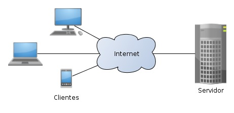
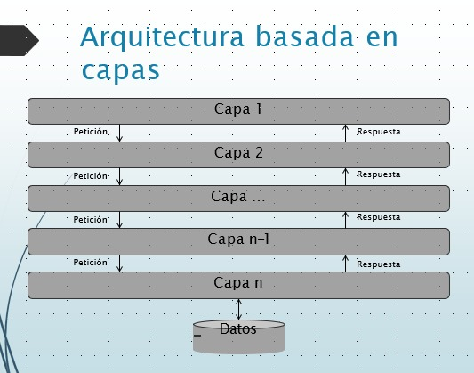

¿Qué es?
Arquitectura Cliente/Servidor
Esta arquitectura consiste básicamente en un cliente que realiza peticiones a otro programa (el servidor) que le da respuesta. Aunque esta idea se puede aplicar a programas que se ejecutan sobre una sola computadora es más ventajosa en un sistema operativo multiusuario distribuido a través de una red de computadoras.
Ventajas
- Acceso centralizado a datos.
- Mayor facilidad a la hora de administrarlos
- Incremento de seguridad
- Sólo es necesario proteger el servidor y la transmisión
- Facilidad de mantenimiento y escalado
- La replicación del servidor es transparente a los clientes
Desventajas
- Los datos y la lógica del negocio se mezclan en el servidor, lo que afecta a la escalabilidad y la extensibilidad.
- Mayor facilidad a la hora de administrarlos
- Incremento de seguridad
- Sólo es necesario proteger el servidor y la transmisión
- Facilidad de mantenimiento y escalado
- La replicación del servidor es transparente a los clientes
Sistemas en donde se emplea
- Navegar una web funciona basándonos en un cliente web (navegador) y un servidor web como Apache, Nginx o LiteSpeed
- Protocolo FTP, funciona de idéntica forma, se utiliza un cliente de FTP (como Filezilla) para conectar a un servidor FTP (como Pure-FTPD, Proftpd, etc)
- SSH: es idéntico también, se utiliza un cliente SSH para conectar al servidor SSH que corre en una red remota.
- Juegos en red: existen clientes que permiten a jugadores online jugar desde sus casas conectándose a servidores de juegos remotos.
Clasificar los sistemas de información de acuerdo con su arquitectura.
¿Qué son las arquitecturas?
Es un conjunto ordenado de mecanismos que tienen como fin la administración de datos y de información, de manera que puedan ser recuperados y procesados fácil y rápidamente.
Arquitectura basada en capas
La arquitectura en capas consta en dividir la aplicación en capas, con la intención de que cada capa tenga un rol muy definido, como podría ser, una capa de presentación (UI), una capa de reglas de negocio (servicios) y una capa de acceso a datos (DAO), sin embargo, este estilo arquitectónico no define cuantas capas debe de tener la aplicación, sino más bien, se centra en la separación de la aplicación en capas (Aplica el principio Separación de preocupaciones (SoC)).
Funcionamiento
- Cada capa agrupa funcionalidad relacionada.
- Las capas se apilan verticalmente entre los usuarios y los datos.
- La comunicación entre capas es explícita mediante interfaces bien definidos y débilmente acoplada.
- Los componentes de una capa sólo pueden interactuar entre sí o con los de la capa inferior.
Ventajas
- Abstracción: Cada capa se define de forma abstracta antes de empezar la implementación.
- Aislamiento: Las capas son independientes. La tecnología de su implementación puede variar sin afectar a las demás.
- Manejabilidad: Las dependencias son claras y explícitas, con lo que los cambios son fácilmente localizables
- Reutilización: Las capas inferiores no tienen dependencias con las superiores, permitiendo su uso potencial en otros escenarios
Desventajas
- Cambios en los niveles inferiores pueden provocar cambios en los niveles superiores
- Aumento en el coste de desarrollo debido a la necesidad de implementar nueva funcionalidad en todas las capas
- Problemas de rendimiento debido a la sobrecarga de llamadas entre las capas.